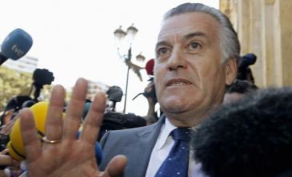

Europa Press | Madrid. Actualizado martes 30/04/2013 21:46 horas
El juez Pablo Ruz ha imputado a ocho empresarios que aparecen recogidos como donantes del PP en la en la contabilidad B atribuida a su ex tesorero Luis Bárcenas. Entre ellos, destacan el presidente de la constructora OHL, Juan Miguel Villar Mir, y el ex presidente de Sacyr Vallehermoso, Luis del Rivero.

El magistrado de la Audiencia Nacional ha dictado una providencia donde les cita para prestar declaración los próximos 27 y 29 de mayo.
La negociación entre España y Bruselas para lograr más tiempo que permita cuadrar las cuentas públicas —el techo de déficit pasa del 4,5% al 6,3% este año— comprendía contrapartidas para el Gobierno de Mariano Rajoy. El déficit es el objetivo primordial.
Por eso, el Gobierno ha incluido en el Programa de Estabilidad de 2013-2016 un nuevo paquete de ajustes para este año valorados en unos 3.000 millones, una cifra adelantada por el presidente el pasado domingo en Granada pero sin detallar las medidas.
Más de 6,2 millones de parados llevan a España a una situación de "emergencia nacional", creen los sindicatos.
Por eso, este miércoles, aprovechando el Primero de Mayo, reclaman "un gran acuerdo para cambiar el modelo económico, por el empleo y la protección", en palabras del líder de CC OO, Ignacio Fernández Toxo. Entre las cosas que tendría que contar ese pacto estaría un plan de choque para estimular la actividad económica.
El Rey ha reaparecido en un acto público en el estadio Santiago Bernabéu, donde ha presenciado en el palco de autoridades la semifinal de Liga de Campeones entre el Real Madrid y el Borussia de Dortmund.
La llegada del monarca a su localidad no ha sido anunciada por megafonía ni ha sonado el himno de España.
Ha sido la primera actividad pública del monarca tras su doble operación de hernia del pasado 3 de marzo. Ya la semana pasada retomó las audiencias en Zarzuela, pero ésta ha sido la primera ocasión en la que ciudadanos y periodistas han podido verle fuera del Palacio de la Zarzuela.
Las principales carreteras de salida de Madrid registran retenciones durante la primera mañana de la operación especial por el puente de mayo, según los datos de la Dirección General de Tráfico (DGT).
La DGT prevé que, coincidiendo con la fiesta nacional del 1 de mayo y la fiesta autonómica del día de la Comunidad de Madrid el jueves 2 de mayo, se produzcan en las carreteras 6 millones de desplazamientos, para lo que ha desplegado un dispositivo especial entre las 15 horas de este martes y las 24 horas del domingo 5 de mayo.
Periodico Digital de Cazorla: Realizado por Antonio Melero Bello para la asignatura TECNOLOGIAS WEB de Ingenieria Informatica UGR
Contacto pinchando aquí